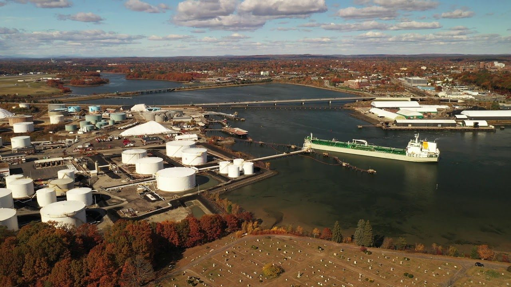
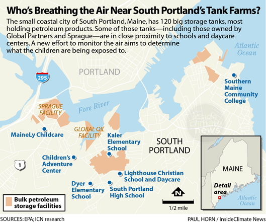
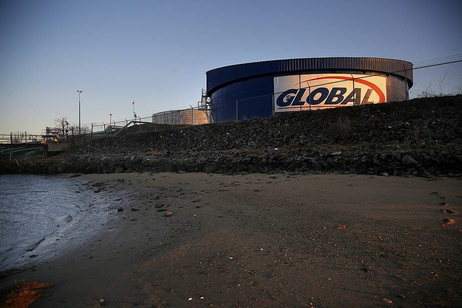
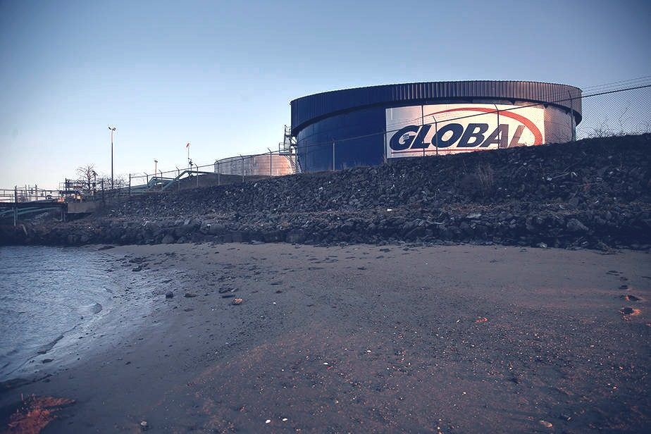
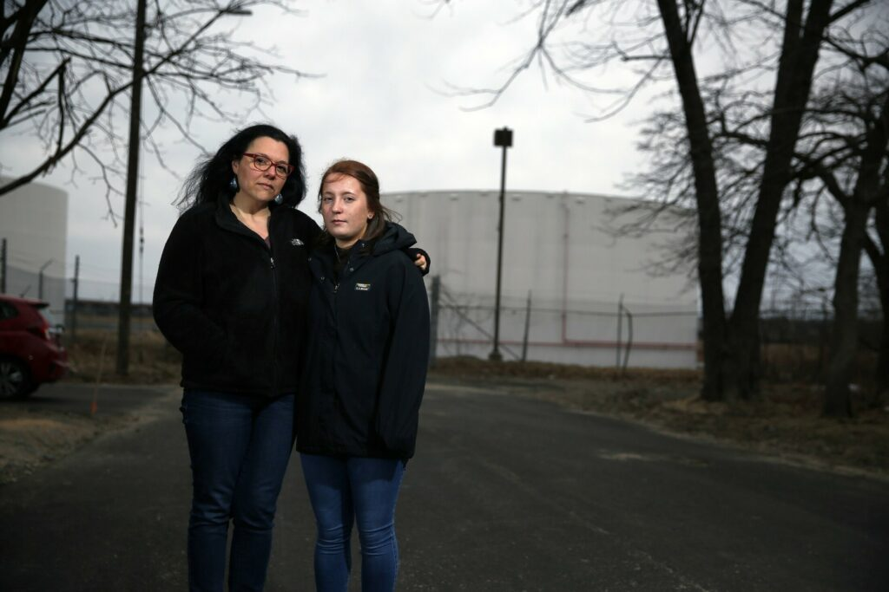
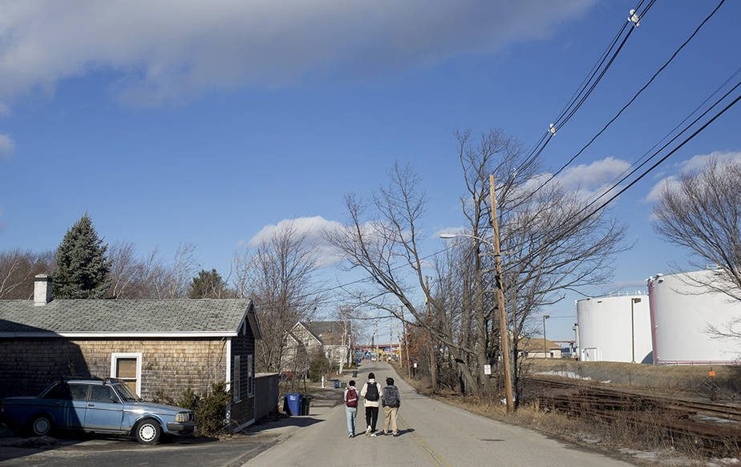
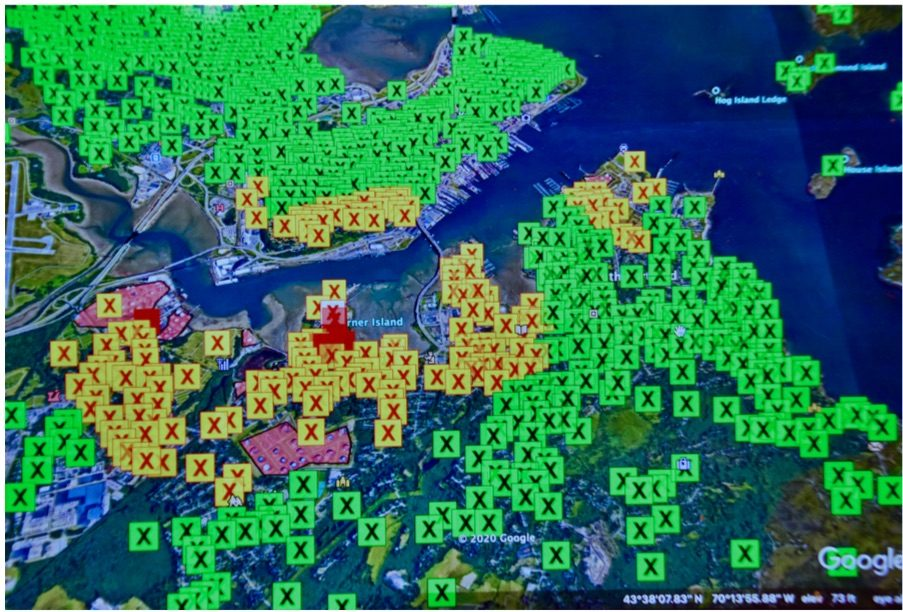

South Portland Tank Farms
Where things stand — October 2026
State fence-line monitoring data has now been collected at the tank farms. Concerning readings came in near every facility. At Citgo on Mechanic Street in Pleasantdale, the air consistently and dramatically exceeded the state standard for benzene, a well-studied carcinogen. At South Portland Terminal on Lincoln Street, one reading registered 12 times the state’s ambient air quality standard.
The raw monitoring summaries are already public on the City’s Air Quality page: the September 2026 24-hour VOC monitoring results (PDF) and the October 6, 2026 fence-line three-year data summary (PDF). DEP and CDC analysis of the fence-line data is expected imminently. When the state publishes its analysis, PSP will post it here along with our response.
Make plans to come to the City Council workshop on Tuesday, Oct. 27 at 6 p.m., South Portland High School (637 Highland Ave.) — and email the Council before the workshop.
120 large petroleum tanks, run by six major oil companies
There are 120 large petroleum tanks in South Portland, run by six major oil companies. Residents have raised concerns for decades that the tanks compromise air quality for the people who live, work and play very close to them. New state data measuring air quality along the fence lines of these tank farms has confirmed what we’ve felt, and smelled, for years: They are bad neighbors, profiting off harm to our community.
Concerning readings were collected near all the tanks, but two tank farms stand out. At Citgo on Mechanic Street, which sits very close to homes in Pleasantdale, monitors found the air consistently and dramatically exceeded state standards for benzene, a well-studied carcinogen. Benzene measurements were highest at South Portland Terminal on Lincoln Street, bordered by businesses, homes and Forest City Cemetery, with one reading registering 12 times higher than the state’s ambient air quality standard, meant to protect people from cancer risk.

Use the slider inside the map to change the search radius around the fence lines. Facilities, schools and child care, the buffer and DEP air monitors are labeled.
Background: EPA and Global Partners in court (2019)
The oil storage tanks of Global Partners and other companies located in South Portland are currently emitting well over what they are permitted to emit according to the EPA. The citizens and city officials of South Portland were alerted to this violation in March 2019, when the EPA filed a complaint in Federal District Court against Global Partners LP for exceeding their emissions license for well over what they are allowed. Apparently the EPA had never notified South Portland of repeated violations over a period of at least 7 years.
The citizens in the neighborhood of Pleasantdale, where Global’s storage tanks are located, have been complaining for years of seeing plumes, experiencing noxious odors and suffering from headaches and other symptoms. Their complaints have virtually been ignored. There are several schools, daycare facilities, and housing for the elderly in this area. Our most vulnerable citizens, our children and our elderly, are being exposed to noxious fumes and the Volatile Organic Compounds (VOC’s) present in these fumes.

The issue has been further complicated by the fact that the Federal EPA and the Maine Department of Environmental Protection (MDEP) have not been able to agree on the same technique for measuring emissions. Although the MDEP has been monitoring the tank farms, they claim they have not found violations and have not taken adequate measures to address the emissions.
Selected reading
- Is there something wrong in the air in South Portland? — Kathryn Miles, Boston Globe Magazine, June 2021
- Petrochemicals Are Killing Us, a New Report Warns in the New England Journal of Medicine — Liza Gross, Inside Climate News, March 2024
EPA action
The EPA filed a consent decree to address the violations by Global, which called for Global to pay the U.S. Justice Department $40,000 in penalties and allot $150,000 to replace/retrofit their wood-burning appliances in the area (of which there are not many in the area). When the citizens of South Portland discovered the terms of the consent decree, there was an outpouring of anger and indignation at the fact that Global did not have to admit wrongdoing or address the harm being done now and over many years. Read the consent decree.

Sprague Oil Company also received a notice of violation from the EPA on May 29, 2020 for several years of violations. The Dept. of Justice filed a consent decree with Sprague for violations at their facilities in both South Portland and Searsport, Maine, as well as in Massachusetts, New Hampshire and Rhode Island. Read the complaint (PDF)
Protect South Portland’s role
Protect South Portland has been actively working to inform the public and explore our legal rights to demand cleaner air. There have been neighborhood meetings to hear complaints and to receive citizen input on how to move forward. Members attend City Council meetings and workshops to demand immediate action to minimize these emissions.



After much research on best practices for abating emissions, Protect South Portland in conjunction with other environmental groups filed our official comments on the consent decree to appeal the existing decree and seek a more appropriate settlement. The Justice Department rejected our appeal. PSP is advocating in the process as the Clean Air Advisory Committee and the city are reviewing Global's permit application with the DEP.
PSP is advocating for continuous emissions monitoring and control to be included in the permit.
Clean Air Advisory Committee
The South Portland City Council formed a Clean Air Advisory Committee (CAAC), charged with creating a strategy to improve the air quality in South Portland and the surrounding area. All meetings were posted and open to the public. CAAC’s final report was released in February 2023. Read more about CAAC.
DEP air quality findings
After pressure from the people of South Portland, the Maine DEP agreed to conduct limited air quality testing using air collection canisters distributed to individuals in some parts of the city. View results on the DEP’s website.
Resolve LD 1915
In 2020 the legislature, according to Resolve LD 1915, directed the Maine Department of Environmental Protection to study the best methods to measure and control emissions on all tanks in Maine, including reviewing what other states and regulatory bodies require of tank operators. The department did not fulfill the mandate of the resolve. Instead they dismissed the need for more comprehensive monitoring and testing. The Maine DEP has focused more on odor than on the risk to public health and has recommended little more than the status quo.
Currently, no actual testing of emissions is required for operators to obtain licenses. In the report, the DEP depends solely on formulas developed by the American Petroleum Institute. These formulas have been deemed acceptable in the report despite that US EPA found that the oil companies using this method were grossly underestimating their emissions with no accountability.
PSP finds it unacceptable that no rule requires tank owners to monitor or control these toxic emissions. The tanks sit inside our neighborhoods and are making residents sick; that is a social justice issue. PSP put together a coalition of 12 health advocacy and environmental organizations to work together to advocate with the ENR to pass a stronger bill.
Read PSP’s response to the DEP report. The full Maine DEP report is below. If you do not want to read the entire 111-page report, we recommend that you start at page 94 and read the section: Conclusions and Recommendations.
Reference documents
- Maine DEP report PDF, 111 pages (per LD 1915, Jan. 2021)
- PSP's submission to the ENR Committee PDF, 3 pages
- David Falatko's comments PDF
- Tom Mikulka's comments PDF
2021–2022: LD 163
After diligent advocating for many months by Senator Anne Carney, PSP, and the Tank Coalition of Maine before the BEP, the ENR, and the State Legislature, LD 163 was signed into law by Governor Mills on June 22, 2021.
Senator Anne Carney’s bill LD 163 with amendments includes fence line monitoring around the perimeter of the above-ground oil tanks and testing twice a year on heated tanks while they are in service. This is a big step forward for South Portland, Portland, and the entire state. These tanks have never been monitored for actual emissions of toxic chemicals.
Instead, a formula established by the American Petroleum Institute has been used to calculate emissions from what gets put into the tanks. This formula, AP-42, has been acknowledged to be widely unreliable.
In South Portland alone, six tank farm facilities combined are permitted to emit almost 600 tons of volatile organic compounds (which turn into ozone) and 104 tons of hazardous air pollutants per year into the air in densely populated neighborhoods with homes, schools, and daycares nearby. The chemicals in the emissions are known to cause cancer, respiratory illnesses (asthma), and neurological problems for fetuses and developing children.
We thank Senator Carney and Representatives Morales and Millett for their tireless work in helping PSP and the Tank Emissions Coalition to successfully pass this bill. Of most importance, PSP hoped that LD 163 with amendment and rulemaking would:
- Require oil tank storage facilities to do actual testing of tank emissions twice a year on heated tanks.
- Require fence-line monitoring on the perimeter of tank farm facilities to measure the hazardous air pollutant emissions that are going beyond the facility into the surrounding community.
Rulemaking
Once a bill is passed into law, Rulemaking determines the wording and substance of the rules to enforce that law. It is crucial that strict and comprehensive rules and regulations be carefully worded in order to get the most comprehensive data from the mandated testing and monitoring. Timing and careful procedures are also important to protecting our community’s health.
The rules, Chapters 170 and 171, for LD 163 were drafted and reviewed by the Board of Environmental Protection (BEP). There was a hearing before the BEP on February 3, 2022. When the rules pass the BEP, they go to the Environment and Natural Resources Committee (ENR) for approval. The rules then need to be approved by the House and Senate. Our goal is to ensure the installation of the strictest rules possible for the state of Maine’s oil storage tanks.
The more data we have in quarterly reporting the more we are able to protect our community. Timing and best-practice procedures matter too. These are additions we requested to be included in the rules:
- Petroleum distillates and residual oils should be added to the list of potential pollutants to be controlled when removing organic vapors for degassing.
- In addition to benzene, three other toxic hazardous air pollutants (HAPs) should be monitored for a nominal additional cost. It is important that we know the amounts of toluene, ethylbenzene, and xylenes along with benzene which form the components of BTEX, all of which may be considered carcinogens.
- To determine the source of emissions, the wind direction as well as temperature and atmospheric pressures should be documented at the time of the testing.
- The proposed time frames for implementing fence line testing are excessive and should be shortened: from 18 months to 9 months.
- We need transparency. All data and analysis must be reported quarterly to the DEP, the affected municipalities, and the public.
Great news: LD 71, the rulemaking on LD 163, passed in May 2023
LD 71 passed as an emergency measure. It passed 114 to 1 in the Maine House of Representatives and it passed in the Maine Senate 26 to 6! Both votes got over the 2/3 required for an emergency measure that requires more immediate implementation.
Fence-line monitoring around all tank farms in Maine and twice-a-year testing of all heated tanks began implementation in 2024, and the requirements are paid for by the oil companies. That monitoring produced the fence-line data described at the top of this page.
We are very appreciative of all the work and commitment the City Council, city staff and the CAAC have brought to the issue of the tank emissions and very grateful for the overwhelming support of State Legislators. This has been a challenging and important issue calling for concerted and continuous efforts.
South Portland and the State of Maine have moved the needle on holding the oil industry accountable to the communities living beside its tank farms.
PSP will keep working for more information
We still don’t have DEP monitors closer to the tank farms, a request made throughout the CAAC’s existence. The CAAC also had been asking for direct vent testing during delivery. We also continue to need information about the schedule of petroleum deliveries, which is connected to the bursts when the tanks are being filled from the ships. The bursts are recurrent intermittent high level emissions that last 12–24 hours. We know that in 2017 there were 200 of these deliveries. The focus of monitoring these past years has been on average annual emissions in areas that are not close to the tanks. This does not answer the central question: what is the exposure to high levels of toxic emissions in the bursts for the thousands of South Portland residents who live in the neighborhoods surrounding the tank farms? We still need to know.
Media coverage
- South Portland wants tougher EPA crackdown on Sprague tank pollution — Kelley Bouchard, July 4, 2020
- OpEd: Maine communities shouldn't have to foot the bill for oil facility closures — Rep. Anne Carney, Mar. 5, 2020
- Maine DEP may seek better ways to measure, control oil tank emissions — Kelley Bouchard, Dec. 7, 2019
- Maine Voices: DEP failing to protect South Portland residents from air pollution — David Falatko, Nov. 8, 2019
- Gov. signs bill requiring owners to clean up closed oil storage tank sites — Dennis Hoey, Mar. 29, 2020
- Two petroleum terminal bills win strong backing from legislative panel — Kelley Bouchard, Feb. 12, 2020
- Fumes in South Portland — Sabrina Shankman, Inside Climate News series, 2019–2020
- Fuzzy Math: How Do You Calculate Emissions From a Storage Tank When The Numbers Don’t Add Up? — Sabrina Shankman, June 1, 2020
- Parents Become Activists in the Fight over South Portland’s Petroleum Tanks — Sabrina Shankman, Feb. 17, 2020
- They Built a Life in the Shadow of Industrial Tank Farms. Now, They’re Fighting for Answers — Sabrina Shankman, Dec. 7, 2019
- With Giant Oil Tanks on Its Waterfront, This City Wants to Know: What Happens When Sea Level Rises? — Sabrina Shankman, Nov. 27, 2019
- 'This Is Not Normal.' New Air Monitoring Reveals Hazards in This Maine City. — Sabrina Shankman, Oct. 29, 2019
- Air Monitoring Reveals Troubling Benzene Spikes Officials Don’t Fully Understand — Sabrina Shankman, Nov. 27, 2019
- Activists Gird for a Bigger Battle Over Oil and Fumes from a Port City's Tank Farms — Sabrina Shankman, Jul. 28, 2019
- State admits it was wrong to resist federal crackdown on oil tank pollution — Kelley Bouchard, Jul. 28, 2019
- 'Is our air safe to breathe?' — Robert Lewis-Nash, Portland Phoenix, Dec. 2020
- SoPo residents seek tighter regulations, accountability for oil tank emissions — Emily Weyrauch, Maine Beacon, Jan. 2021
- ME DEP issues report on South Portland oil storage tanks — WMTW, Jan. 5, 2021
- SoPo residents press ME environmental regulators on oil storage tank emissions testing remediation — WMTW, Jan. 13, 2021
- EPA: South Portland oil storage facility violated Clean Air Act, agrees to settlement — Kelley Bouchard, Mar. 25, 2019
- Battle over South Portland tank emissions moves to Augusta — Portland Phoenix
The rally video from Apr. 23, 2021: watch on YouTube.
Now is the time to act:
- Make plans to come to the City Council workshop on Tuesday, Oct. 27 at 6 p.m., South Portland High School (637 Highland Ave.).
- Email the City Council before the workshop and ask them to pressure the DEP to use the existing licensing process to stop tank farms from dumping pollutants into our neighborhoods. City Council email addresses are found here: southportland.gov/411/City-Council.
- Email protectsouthportland@gmail.com to get plugged into local tank farm efforts.
Health effects of VOCs
Volatile Organic Compounds (VOCs) are made up of elements including Hazardous Air Pollutants (HAPs). Global was cited by the EPA for releasing twice their permitted VOCs for at least seven years. HAPs vary in their disease effects.
They hit the very young the hardest because they are growing rapidly and their resting metabolic rate is higher. They consume more oxygen per body weight than adults. This significantly increases their exposure to HAPs. Their airways are narrower and their mucous glands are larger. Irritations that might cause only a slight response in an adult could result in dangerous obstruction for a child. This obstruction can put them at risk for allergies and life threatening asthma.
For all of us, long-term exposure can harm the heart and circulatory system, the liver (our major organ of detoxification) and, most critically, the immune system. The genetics we inherit from our parents and past generations isn’t necessarily what condemns us to the cancers, autoimmune diseases and other illnesses that we struggle with. Researchers now describe inherited DNA as a blueprint. It is the environmental challenges that potentially change the DNA that pulls the trigger for these diseases.
We know that increasing amounts of these VOCs in the air we breathe are a risk factor, especially for children, the elderly, pregnant women and people living near the source of these pollutants. We have heard testimony from people living in the vicinity of the Global tank farm that they have endured frequent severe headaches, and discomfort of breathing in the toxic smells emitted especially in the evenings.
Cancer risk
Cancer Risk For Portland and South Portland Residents From Tank Farm Emissions Using the EPA HEM-3 Model
Legend — Increased Cancer Risk Per Million People:
- Green squares: low-3, high-19
- Yellow squares: low-20, high-89
- Red squares: low-101, high-165

This map summarizes the areas at greatest risk for increased cancer incidence by color. It was created by South Portland environmental engineer David Falatko using the EPA risk assessment model HEM-3. The Human Exposure Model (HEM-3) is a streamlined yet rigorous tool that can be used to estimate ambient concentrations, human exposures and health risks that may result from air pollution emissions from complex industrial facilities.
The risk factors are based upon the permitted levels of emissions for each tank farm except Portland Pipeline Co. LLC, whose tanks were no longer in use. However, since that time, six to eight of the 23 tanks have been filled with crude oil. Refilling these tanks will result in an increase in the above risk estimates since the Portland Pipeline company was ranked with Sprague and Gulf as the largest permitted emitter of HAPs when in full operation.
The Maine CDC considers the acceptable cancer risk to be 10 additional cancers per million population. Other states such as Mass. and NY consider the acceptable increase to be 1 cancer per million of population.
What the model clearly shows is that the tank farms presently represent an unacceptable increase in cancer risk to fence-line neighborhoods. The solution is to require the capture of the harmful emissions using the best available control technology.